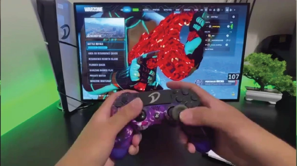
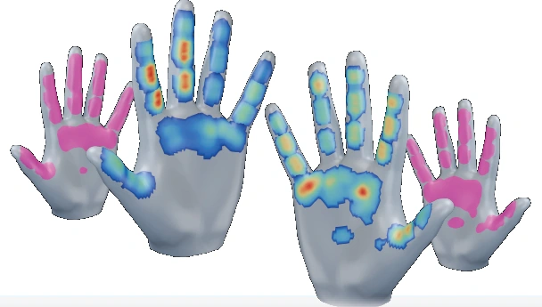

One surface.
Many sensing devices.
A shared 3D tactile field that models spatial force decay and preserves local response peaks.
Seeing how we interact.
Understanding what we feel.

The visible interaction
The underlying touchA video shows how a hand moves. But where does it make contact, and how is force distributed?
EgoFact recovers dense tactile fields for both hands directly from egocentric RGB inputs. It connects visible actions with the physical signals at the hand–object interface, even when contact is hidden from view.
By mapping different tactile sensors onto one canonical 3D hand surface, we bring heterogeneous devices into a shared representation for learning and evaluation.
Understanding human dexterity from egocentric videos requires recovering both kinematics and the tactile signals underlying hand–object interactions. EgoFact introduces a unified framework for estimating dense, full-hand tactile fields of both hands. It maps heterogeneous measurements onto a canonical 3D hand surface with spatial decay and propagation, uses a tracker-free vision-to-tactile model with a force-guided learning objective, and introduces EgoFact-Data: 100 hours of cross-device recordings. Evaluation across five egocentric–tactile benchmarks demonstrates improvements in contact and tactile estimation. The estimated fields also support 3D hand–object reconstruction and dexterous skill imitation in simulation.
A shared 3D tactile field that models spatial force decay and preserves local response peaks.
Multi-level visual features predict full-hand touch without an upstream hand-pose tracker.
Evaluation on unseen scenes and tasks, with applications in reconstruction and skill learning.
A shared representation.
A direct path from RGB to tactile
fields.
Egocentric RGB images, with hand regions localized using SAM3.
DINOv3 features from four levels, fused through learned residual updates.
Dense full-hand tactile fields, trained with a force-guided objective.
Map each device’s tactile sensors onto a canonical MANO hand surface.
Geodesic Gaussian kernels model force decay along the connected surface.
The upper envelope retains the strongest sensor response at each vertex.
A cross-device egocentric–tactile dataset
for learning the
physical side of interaction.
JQ-Glove, Wuji-Glove, and Matrix-Glove capture both hands, alongside stereo egocentric video and eight exocentric views. Scene-held-out and task-held-out protocols evaluate generalization beyond the training set.
Evaluated across five tactile benchmarks
and unconstrained,
in-the-wild examples.
Reported values from Table 2.
Accuracy and IoU in %; MAE in
N.
| Method | Accuracy ↑ | C-IoU ↑ | V-IoU ↑ | MAE ↓ |
|---|---|---|---|---|
| OpenTouch | 55.61 | 33.60 | 28.33 | 0.1995 |
| EgoFact OURS | 82.40 | 53.15 | 48.09 | 0.1442 |
All methods are evaluated on the unified tactile representation. Bold denotes the better value within the selected comparison.
Physical cues for reconstruction
and dexterous skill
learning.
Estimated contact and force cues refine coarse hand–object reconstructions, reducing penetration and improving contact alignment.
HAND–OBJECT RECONSTRUCTIONTactile rewards complement pose tracking for a simulated Wuji-Hand, improving early learning and final task completion.
DEXTEROUS SKILL IMITATIONPaper, project website, and future releases.
Publication links and author details will be updated when available.
@unpublished{egofact,
title = {EgoFact: Estimating Dense
Full-Hand Tactile Fields from
Egocentric Human Videos},
author = {Anonymous},
note = {Manuscript under review}
}
Anonymous manuscript. Final citation details to follow.